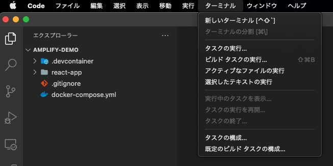

1. 環境作成
1.1. はじめに
Dockerで作成していきます。エディタはVS Code前提となっています。
1.2. 作業リポジトリのclone
作業用ディレクトリとなるプログラムをcloneします。 clone先はdockerコマンドが動作するご自身の環境に合わせてください。
git clone https://github.com/Tanabebe/amplify-demo.git && cd amplify-demo
cloneしたらVS Codeで上記のフォルダを開きます。
※Windowsの方はVS Codeを管理者権限で開いて下さい（後述のdocker cpで失敗する可能性があるため，）。
開いたら下図のように「ターミナル」→「新しいターミナル」を選択し，ペイン上に表示させます。


※デフォルトシェルは環境によって違うのですが，bashやzshなどdockerコマンドが通るシェルであれば問題ないです。
1.3. Dockerの起動
以下のコマンドを実行して，コンテナを起動します。Creating amplify-demo_amplify_1 ... doneとターミナルに表示されればOKです。
docker-compose up -d
※PC性能，回線状況により異なりますが，大体5分程度でした。
起動出来たら念の為，コンテナ名と起動状態の確認を行います。以下の例だとamplify-demo_amplify_1がコンテナ名です。
docker-compose ps
以下のように，Nameと表示されている箇所がコンテナ名です。
Name Command State Ports
-----------------------------------------------------------------------------------------------------------
amplify-demo_amplify_1 docker-entrypoint.sh node Up 0.0.0.0:3000->3000/tcp, 0.0.0.0:3001->3001/tcp
コンテナ起動は問題ないですが，コンテナ側のnode_modulesはホスト側にマウントしていないため，以降のプログラム修正時に都合が悪いです。無理やり感はありますが，手動でコピーします。
# docker cp コンテナ名:/amplify-demo/react-app/node_modules react-app/
docker cp amplify-demo_amplify_1:/amplify-demo/react-app/node_modules react-app/
コピーが終わったらコンテナの中に入っていきます。
# docker exec -it {コンテナ名} bash
docker exec -it amplify-demo_amplify_1 bash
1.4. 事前準備の最終確認
コンテナの中に入ったら念の為，nodeとnpmのバージョン，amplifyがインストールされているか確認します。
node -v && npm -v && amplify --version
下記のように表示されたらOKです。
v14.16.1
6.14.12
Initializing new Amplify CLI version...
Done initializing new version.
Scanning for plugins...
Plugin scan successful
4.50.2
最後にReactアプリが動作するか確認します。
yarn start
以下のようにコンソールに表示されたらhttp://localhost:3000にアクセスしましょう。
Compiled successfully!
You can now view react-app in the browser.
Local: http://localhost:3000
On Your Network: http://172.22.0.2:3000
Note that the development build is not optimized.
To create a production build, use yarn build.
アクセスしたら下図の画面が表示されたらOKです。ターミナル上でctrl + cでサーバーを一旦停止させます。

次はGitHubへリポジトリを作成し，コンテナの中に入ったまま起動確認したReactアプリをあげていきます。
2. GitHubにpush
2.1. GitHubに新規リポジトリ作成
ご自身のGitHubアカウントへアクセスし，新しくリポジトリを作成します。

公開範囲はpublicでもprivateのどちらでもお好きな方を選択してください。

2.2. DockerコンテナからGitHubへプッシュ
リポジトリを作成したらコンテナ内で以下を実行します。
※メールアドレスとユーザー名は，GitHubのURLはご自身の環境に合わせて下さい。
git init
# ※ご自身の環境に合わせて下さい
git config --global user.email "your-mailaddress@example.com"
git config --global user.name "your name"
git add .
git commit -m "first commit"
git branch -M main
# ※ご自身の環境に合わせて下さい
git remote add origin https://github.com/{your name}/react-amplify.git
git push -u origin main
以下の通り，反映されていればOKです。

ここまで完了したらAWSコンソールからAmplifyを使用してデプロイします。
3. Amplifyでデプロイ
AWSコンソールにサインインし，Amplifyサービスを検索，選択します。
3.1. Amplifyサービスの選択

Amplifyのサービス画面に移動したらページ下部のDeliverのGet startedを選択します。

3.2. AmplifyとGitHubの連携
GitHubを選択し，次へ進みます。

GitHubの認証が必要なので完了させると以下のとおり，リポジトリと連携出来るようになります。
前項で作成したリポジトリのreact-amplifyを選択し，次へを選択します。

3.3. Amplifyの自動ビルド設定とデプロイ
ビルド設定の構成ではデフォルトのまま，次へを選択します。

確認まで進んだら保存してデプロイを選択します。
Amplifyによって自動でビルドされ、アプリが公開されますが検証まで完了するのは少し時間がかかります。下図の赤枠部から公開されたページに飛べます。

3.4. デプロイされたReactアプリの確認
検証まで完了すると下図と同じ画面が表示されます（完了していない場合はデフォルトの画面が表示されます）。
次はAmplifyの設定を進めていきます。
4. Amplifyのユーザー作成
4.1. Amplifyプロジェクトを操作するアカウントの設定
Dockerコンテナに入った状態で実施していきます。Amplifyの設定をしますが以下コマンド実行後は設問となるので注意して下さい。
# まずはこのコマンドを実行する
amplify configure
以降ターミナル上で設問が始まるので注意。以降は設問毎に表題を分割しています。
# amplify configureのコマンド実行直後
Initializing new Amplify CLI version...
Done initializing new version.
Scanning for plugins...
Plugin scan successful
Follow these steps to set up access to your AWS account:
Sign in to your AWS administrator account:
https://console.aws.amazon.com/
Press Enter to continue # ここはEnterを押してOKです
4.2. リージョンの選択
Specify the AWS Region
# ap-northeast-1を選択し，Enter
? region: ap-northeast-1
4.3. IAMユーザー名の入力
Specify the username of the new IAM user:
# dev-amplifyと入力し，Enter
? user name: dev-amplify
4.4. AWSコンソール上でユーザーの確認
Complete the user creation using the AWS console
https://console.aws.amazon.com/iam/home?region=ap-northeast-1#/users$new?step=final&accessKey&userNames=dev-amplify&permissionType=policies&policies=arn:aws:iam::aws:policy%2FAdministratorAccess
# ご自身のURLが表示されるのでユーザの確認をします（下図を参照）
URLにアクセスすると下図の画面が表示されますので，ユーザー名を確認して次へ。

既存ポリシーはそのままで次へ。
タグは得に設定せず次へ（設定したい方は設定しても可です）。

ユーザー名，アクセス権限，タグの確認を行いユーザーの作成を選択します。
ユーザーが追加されるのでアクセスキーID，シークレットアクセスキーをコピーし，控えておいて下さい。
csvのダウンロードでも可です。

4.5. アクセスキー情報の入力
Press Enter to continue # ←Enterを押してキー情報入力
Enter the access key of the newly created user:
# 前項で控えたアクセスキーIDをコピペしてEnter
? accessKeyId: ********************
# 前項で控えたシークレットアクセスキーをコピペしてEnter
? secretAccessKey: ****************************************
5.6. プロファイル名の選択
This would update/create the AWS Profile in your local machine
# デフォルトを選択しEnter
? Profile Name: default
# 完了すると表示される
Successfully set up the new user.
これでawsフォルダ配下にIAMユーザーのプロファイルが生成されます。 次はAmplifyプロジェクトの作成を行います。
5. Amplifyのプロジェクト作成
5.1. Amplifyプロジェクトの初期化
引き続きDockerコンテナに入った状態で実施していきます。こちらも前項と同じく，以下コマンド実行後は設問となるので注意して下さい。
# まずは以下を実行
amplify init
5.2. 初期化するプロジェクト構成の選択
# amplify initのコマンド実行直後
Note: It is recommended to run this command from the root of your app directory
? Enter a name for the project reactamplify # ←Enterを押します
The following configuration will be applied:
Project information
| Name: reactamplify
| Environment: dev
| Default editor: Visual Studio Code
| App type: javascript
| Javascript framework: react
| Source Directory Path: src
| Distribution Directory Path: build
| Build Command: npm run-script build
| Start Command: npm run-script start
# Yを入力
? Initialize the project with the above configuration? Yes
Using default provider awscloudformation
5.3. 認証方法の種類を選択
# AWS profileを選択
? Select the authentication method you want to use: AWS profile
For more information on AWS Profiles, see:
https://docs.aws.amazon.com/cli/latest/userguide/cli-configure-profiles.html
5.4. 使用するプロファイルを選択
# defaultを選択
? Please choose the profile you want to use default
Adding backend environment dev to AWS Amplify Console app: d2nvyvjheogdaz
⠇ Initializing project in the cloud...
# 途中略，少し待つ
✔ Successfully created initial AWS cloud resources for deployments.
✔ Initialized provider successfully.
Initialized your environment successfully.
Your project has been successfully initialized and connected to the cloud!
Some next steps:
"amplify status" will show you what you've added already and if it's locally configured or deployed
"amplify add <category>" will allow you to add features like user login or a backend API
"amplify push" will build all your local backend resources and provision it in the cloud
"amplify console" to open the Amplify Console and view your project status
"amplify publish" will build all your local backend and frontend resources (if you have hosting category added) and provision it in the cloud
Pro tip:
Try "amplify add api" to create a backend API and then "amplify publish" to deploy everything
これで完了です。react-amplifyの配下にamplifyフォルダが作成されました。
次はAmplifyの認証サービスを追加します。
6. Amplifyの認証サービス追加
6.1. AmplifyのAuth機能を追加
こちらも前項と同じく，以下コマンド実行を行いますが，同じように設問となるので注意して下さい。
# 以下のコマンドを実行
amplify add auth
6.2 認証・セキュリティ構成の選択
# amplify add authの実行直後
Using service: Cognito, provided by: awscloudformation
The current configured provider is Amazon Cognito.
# Default configurationを選択する
Do you want to use the default authentication and security configuration? Default config
uration
Warning: you will not be able to edit these selections.
6.3 ユーザーのログイン方法の選択
# Usernameを選択
How do you want users to be able to sign in? Username
# No, I am done.を選択
Do you want to configure advanced settings? No, I am done.
Successfullyまで表示されたら完了です。追加したauthをデプロイします。数分かかるので待ちます。
6.4 authサービスのデプロイ
$ amplify push --y
7.5 AWSコンソールで認証アプリを確認
完了するとreactamplifyの認証アプリが作成されます。以下のコマンドを実行するとAWSコンソール上でも確認出来ます。
$ amplify console
# Consoleを選択 ，今回はUI側の選択には触れません
✔ Which site do you want to open? · Console
次はReactアプリへ認証機能を追加していきます。
7. Reactアプリに認証機能追加
7.1. ReactアプリにAmplifyのAWSリソースを追加
react-amplify/src/index.tsxを修正する。
// index.tsx
import React from 'react';
import ReactDOM from 'react-dom';
import './index.css';
import App from './App';
import Amplify from 'aws-amplify';
import config from './aws-exports';
Amplify.configure(config);
ReactDOM.render(
<React.StrictMode>
<App />
</React.StrictMode>,
document.getElementById('root')
);
7.2. 認証用コンポーネントの追加
react-amplify/src/App.tsxを修正する。
import logo from './logo.svg';
import './App.css';
import { withAuthenticator, AmplifySignOut } from '@aws-amplify/ui-react'
function App() {
return (
<div className="App">
<header>
<img src={logo} className="App-logo" alt="logo" />
<h1>Hello Amplify!!</h1>
</header>
<AmplifySignOut />
</div>
);
}
export default withAuthenticator(App);
7.4. 認証画面の動作確認とログインユーザー作成
ここまで修正したらyarn startで起動しましょう。http://localhost:3000/でアクセスすると以下の画面が表示されます。画面内のCreate accountからアカウントを作成します。

アカウントの作成画面に移動するので，作成します。次の画面で確認コードを入力する必要があるので，有効なメールアドレスを入力して下さい。


送られてきたメールの確認コードを入力するとログイン出来ます。

この時点での成果をプッシュしていき，自動デプロイの結果も確認したいところですが，AWSコンソール上でAmplifyの設定を更新する箇所がありますので次項で進めます。
8. 自動デプロイ(CI/CD)の確認と設定変更
8.1. なぜ設定を変更するのか
実は.gitignoreにaws-exports.jsが含まれてしまっているため，このままだとフロントエンドのビルドでaws-exports.jsファイルが見つからないというエラーが発生します。
試しに前項からGitへプッシュするとデプロイで失敗となります（試しても試さなくても構いません）。AWSコンソール上でこの問題を解決していきます。
8.2. 環境変数の追加
AWSコンソールへアクセスし，Amplifyの環境変数を更新します。
以下のようにaws-exports.jsに書いてあるプログラム(const部から全てコピー）をコピーします。こちらが環境変数の値となります。変数名はsecretfileとしています。
8.3. ビルド設定の追加
次はビルド設定を更新します。下図のとおりビルド設定に一行追加します。AWSコンソール上で修正してOKです。

プログラムは以下となります。
version: 1
frontend:
phases:
preBuild:
commands:
# 追加
- echo $secretfile > ./src/aws-exports.js
- yarn install
build:
commands:
- yarn run build
artifacts:
baseDirectory: build
files:
- '**/*'
cache:
paths:
- node_modules/**/*
8.4. 自動デプロイが成功するか確認
変更したコードをプッシュします。
git add .
# コメントはお好きなように
git commit -m "modified amplify auth add."
git push
しばらくすると自動デプロイの正常完了が確認出来ます。

ex. コードを変更しない場合の手動デプロイ（再デプロイ）方法について
もし，デプロイ時の試している方は以下からGitプッシュを行わなくても再デプロイが可能です。赤枠部はリンクになっているので飛んだ先で手動での再デプロイが可能です。


ここまででAmplifyを使ったハンズオンは完了です。お疲れ様でした。とはいえ今のままでは若干見た目も微妙なので，まだ時間に余力があれば次項を進めてください。
また，最後に今回作成した環境削除についてこちらに手順がありますので参照ください。
9. Amplifyの認証画面を日本語化し，Reactアプリレイアウトを整える
9.1. 画面レイアウトを修正する
追加と修正を行うファイルは下図の赤枠が対象です。

ここでは，Amplifyで提供されているコンポーネントを日本語化し，ログイン後の画面を簡素ですが少しだけ変更する，という事を進めます。本当に簡易的なレイアウト追加なので付録的な内容だと思っていただければと思います。最終的には以下の画面になります。
ログイン
ログイン後

9.2. Amplifyの認証画面を日本語化
日本語化用のファイルを作成します。
react-amplify/src/assets/i18n/amplify/のフォルダを作成し，配下にlocalization.jsを作成します。
翻訳辞書的な内容ですが，これでも全てカバー出来ないとは思いますので気休め程度に。
// localization.js
export const localization = {
ja: {
'Sign In': 'サインイン',
'Sign Up': 'サインアップ',
'Sign Out': 'サインアウト',
'Sign in to your account': 'アカウントにサインイン',
'Username *': 'ユーザー名 *',
'Password *': 'パスワード *',
'Enter your username': 'ユーザー名を入力',
'Enter your password': 'パスワードを入力',
'No account?': 'アカウントが未登録ですか？',
'Forgot your password?': 'パスワードをお忘れですか？',
'Reset password': 'パスワードをリセット',
'User does not exist': 'ユーザーが存在しません',
'User already exists': 'ユーザーは既に存在します',
'Incorrect username or password.': 'ユーザー名またはパスワードが違います',
'Invalid password format': 'パスワードのフォーマットが不正です',
'Create account': 'アカウントを作成',
'Forgot Password': 'パスワードを忘れた',
'Change Password': 'パスワードを変更',
'New Password': '新しいパスワード',
'Email': 'Email',
'Phone Number': '電話番号',
'Confirm a Code': 'コードを確認',
'Confirm Sign In': 'サインインを確認',
'Confirm Sign up': 'サインアップを確認',
'Back to Sign In': 'サインインに戻る',
'Send Code': 'コードを送信',
'Confirm': '確認',
'Resend Code': 'コードを再送',
'Submit': '送信',
'Skip': 'スキップ',
'Verify': '検証',
'Verify Contact': '連絡先を検証',
'Code': 'Code',
'Confirmation Code': '確認コード',
'Lost your code?': 'コードがありませんか？',
'Account recovery requires verified contact information': 'Account recovery requires verified contact information',
'Invalid phone number format': '不正な電話番号フォーマットです。 電話番号は次のフォーマットで入力してください: +12345678900',
'Create Account': 'アカウントを作成',
'Have an account?': 'アカウントをお持ちですか？',
'Sign in': 'サインイン',
'Create a new account': '新しいアカウントを作成',
'Reset your password': 'パスワードをリセット',
'An account with the given email already exists.': 'そのメールアドレスは既に存在します',
'Username cannot be empty': 'ユーザー名は必須です',
'Password attempts exceeded': 'パスワード試行回数が超過しました',
'Email Address *': 'メールアドレス',
'Phone Number *': '電話番号',
'User does not exist.': '存在しないユーザーです'
},
};
日本語化の内容を適用するためにindex.tsxを修正します。
// index.tsx
import React from 'react';
import ReactDOM from 'react-dom';
import './index.css';
import App from './App';
import Amplify, { I18n } from 'aws-amplify';
import { localization } from './assets/i18n/amplify/localization';
import config from './aws-exports';
Amplify.configure(config);
I18n.putVocabularies(localization);
I18n.setLanguage('ja');
ReactDOM.render(
<React.StrictMode>
<App />
</React.StrictMode>,
document.getElementById('root')
);
9.3. ログイン後の画面レイアウトを修正
ログイン後のコンポーネントを作成します。
react-amplify/src/layoutフォルダを作成します。このフォルダ配下にNavBar.tsxとDemoContent.tsxを追加していきます。
まず，NavBar.tsxを追加します。これはApp.tsxで渡ってくるログインしたユーザー名を受け取りますが，この時点ではこのまま書いてもエラーが出ると思いますが，最後のApp.tsxまで修正すると解消するので一旦は無視しましょう。
// NavBar.tsx(ログイン後のヘッダー部)
import { AmplifySignOut } from '@aws-amplify/ui-react';
import logo from '../logo.svg';
import React, { FC } from 'react';
import { Container, Menu } from 'semantic-ui-react';
import 'semantic-ui-css/semantic.min.css'
type NavProps = {
username: string;
}
const NavBar: FC<NavProps> = (navProps) => {
const { username } = navProps;
return (
<Menu block='true' inverted>
<Container>
<Menu.Item header>
<img src={logo} alt="logo" />
Hello {username} !!
</Menu.Item>
<Menu.Item position='right'>
<AmplifySignOut />
</Menu.Item>
</Container>
</Menu>
)
}
export default NavBar;
DemoContent.tsxを追加。あくまで飾り程度の残念コンポーネントです。こちらは何も動的な動作をしないので，特にエラーは起こりません。
// DemoContent.tsx
import { Card, Container, Icon, Image } from "semantic-ui-react";
export default function DemoContent() {
return (
<Container>
<Card.Group>
<Card>
<Image src='https://react.semantic-ui.com/images/avatar/large/matthew.png' wrapped ui={false} />
<Card.Content>
<Card.Header>Matthew</Card.Header>
<Card.Meta>
<span className='date'>Joined in 2015</span>
</Card.Meta>
<Card.Description>
Matthew is a musician living in Nashville.
</Card.Description>
</Card.Content>
<Card.Content extra>
<a href="example.com">
<Icon name='user' />
12 Friends
</a>
</Card.Content>
</Card>
<Card>
<Image src='https://react.semantic-ui.com/images/avatar/large/elliot.jpg' wrapped ui={false} />
<Card.Content>
<Card.Header>elliot</Card.Header>
<Card.Meta>
<span className='date'>Joined in 2021</span>
</Card.Meta>
<Card.Description>
Elliot is a sound engineer living in Nashville who enjoys playing guitar and hanging with his cat.
</Card.Description>
</Card.Content>
<Card.Content extra>
<a href="example.com">
<Icon name='user' />
20 Friends
</a>
</Card.Content>
</Card>
<Card>
<Image src='https://react.semantic-ui.com/images/avatar/large/steve.jpg' wrapped ui={false} />
<Card.Content>
<Card.Header>Steve Sanders</Card.Header>
<Card.Meta>
<span className='date'>Joined in 2015</span>
</Card.Meta>
<Card.Description>
Steve wants to add you to the group <strong>best friends</strong>
</Card.Description>
</Card.Content>
<Card.Content extra>
<a href="example.com">
<Icon name='user' />
18 Friends
</a>
</Card.Content>
</Card>
<Card>
<Image src='https://react.semantic-ui.com/images/avatar/large/molly.png' wrapped ui={false} />
<Card.Content>
<Card.Header>molly</Card.Header>
<Card.Meta>
<span className='date'>Joined in 2019</span>
</Card.Meta>
<Card.Description>
molly is a musician living in Nashville.
</Card.Description>
</Card.Content>
<Card.Content extra>
<a href="example.com">
<Icon name='user' />
2 Friends
</a>
</Card.Content>
</Card>
</Card.Group>
</Container>
)
}
ログイン時と非ログイン時の出し分けと，ユーザー名をNavBarコンポーネントに渡すくらいしかしていませんが，最後にApp.tsxを修正します。
// App.tsx
import React, { useEffect, useState } from 'react';
import './App.css';
import {AmplifyAuthenticator } from '@aws-amplify/ui-react';
import { AuthState, onAuthUIStateChange} from "@aws-amplify/ui-components";
import NavBar from './layout/NavBar';
import DemoContent from './layout/DemoContent';
const App = () => {
const [authState, setAuthState] = useState<AuthState>();
const [user, setUser] = useState<any>();
useEffect(() => {
return onAuthUIStateChange((nextAuthState, authData) => {
setAuthState(nextAuthState);
setUser(authData);
});
}, []);
return authState === AuthState.SignedIn && user ? (
<div>
<NavBar username={user.username}/>
<DemoContent />
</div>
) : (
<AmplifyAuthenticator />
);
}
export default App;
これでざっくりと画面レイアウトを変更出来たので，完了となります。認証機能がこれだけ簡単に実装出来るとは...という驚きが多いAmplifyでした。AmplifyコンポーネントやらAPIもかなり用意されているようですが，これを使いこなすのはなかなか骨は折れそうです。
これにて「mirameet vol.16」のハンズオンは終了となります。ご参加いただいた方，お疲れ様でした。
10. ハンズオン環境削除
使用したAmplifyアプリの削除とIAMユーザーの削除，そしてコンテナとイメージの削除を行います．
10.1. Amplify上のアプリを削除
AWSコンソール上からすべてのアプリを表示し，削除するアプリを選択します。まずはreactamplify（下図左側）を削除します。こちらはamplify add authで追加したアプリになります。

画面右上のアクションからアプリの削除を押します。

テキストボックスにdeleteを入力し，Deleteボタンを押します。実際に削除されるまでは少々時間がかかりますが，これで認証用に作成したauthのアプリは削除されます。

次はReactで作成したreact-amplifyアプリ（下図右側）の削除を行います。
こちらも画面右上のアクションからアプリの削除を押します。

同じくテキストボックスにdeleteを入力し，Deleteボタンを押します。こちらはすぐ削除されます。

10.2. IAMユーザーの削除
amplify用に作成したユーザーを削除していきます。検索ボックスにIAMと入力し，ユーザーを選択してください。

削除するユーザーのチェックボックスをONにし，ユーザーの削除ボタンを押します。

チェックボックスをONにし，はい，削除しますボタンを押します。

AWSコンソールの作業はこれで完了です。次は使用したコンテナとイメージを削除します。
10.3. Dockerコンテナの削除
VS Codeのターミナル，もしくはご自身が使用しているターミナルで以下コマンドを実行し，稼働中のコンテナを停止します。停止に完了すると停止したコンテナIDがターミナルに表示されます。
docker stop $(docker ps -q)
念の為，停止している全コンテナを確認します。
docker ps -a
下図のようにターミナル上に表示されるので，コンテナIDもしくはコンテナ名をコピーして下さい。

以下コマンドを実行します。
# docker rm コンテナIDもしくはコンテナ名
docker rm amplify-demo_amplify_1
コンテナを確認し，消えていればコンテナの削除は完了です。次はイメージを削除します。
docker ps -a
10.4. Dockerイメージの削除
ローカルに保存されているイメージの確認をするので以下コマンドを実行してください。
docker images
下図のようにリポジトリ部はtanabebe/meet-amplify-demoとなっているのでイメージIDをコピーします。

コピーしたイメージIDを使用してイメージの削除コマンドを実行します。
# docker rmi イメージID
docker rmi 21d270f241ed
※もし消えない場合はdocker rmi -f 21d270f241edのように，強制的に削除する-fのオプションを使用してください。
最後にイメージが消えているか確認し，完了です。
docker images
お疲れ様でした。